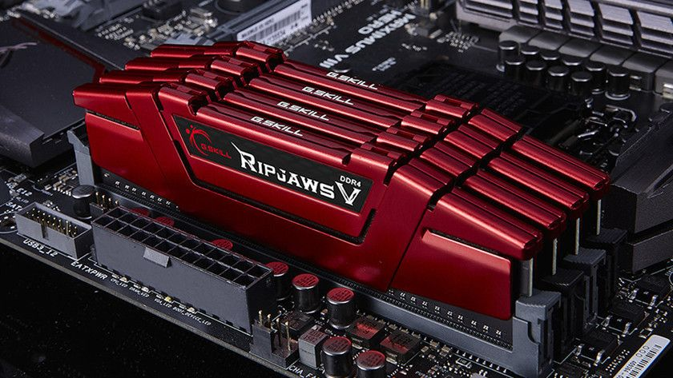
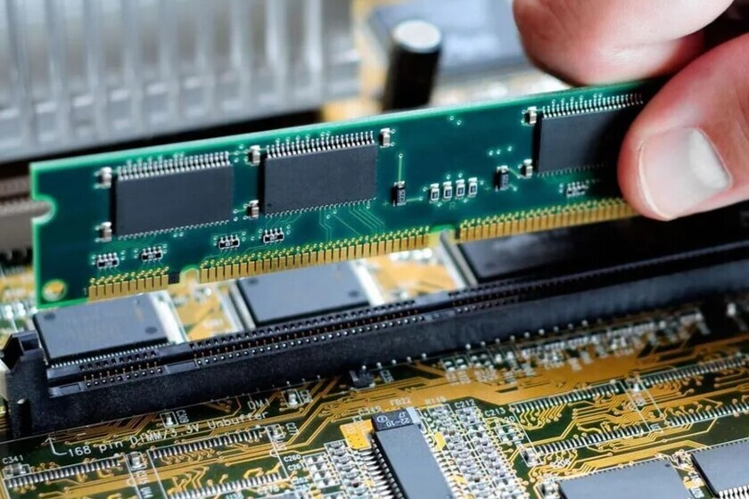

Desde luego, hay RAM de muchos tipos! Como sucede con cualquier otro hardware informático, los científicos tratan constantemente de reducir el consumo energético al tiempo que aumentan la velocidad y la capacidad. La RAM existe desde los primeros tiempos de la computación y, en los albores de la microinformática, era preciso ir conectando los chips de uno en uno.
Para finales de la década de 1990 y comienzos del nuevo siglo XXI, los usuarios podían elegir entre la RAM estática (SRAM), la RAM dinámica (DRAM) y la RAM dinámica síncrona (SDRAM).
Hoy en día, el tipo más común es la RAM DDR, de la que existen diversas iteraciones: DDR2, DDR3, DDR4 y DDR5. DDR son las siglas en inglés de «velocidad de datos doble» y esta memoria permite realizar varias transferencias de archivos al mismo tiempo. La velocidad es de unos 25 gigabytes por segundo para la RAM DDR4 más reciente.
También existen distintas velocidades dentro de la memoria DDR4. Lo habitual es que estas placas de memoria funcionen a unos 2500 MHz. Si quiere exprimir al máximo el rendimiento de su memoria, puede obtener RAM con una mayor frecuencia de reloj. Hoy en día encontrará memoria entre los 2333 y los 5000 MHz (interesante para los jugadores y quienes aceleran la GPU). ¡A más megahercios, más rápida es la RAM!
En algún momento, la memoria DDR5 reemplazará a la DDR4, ya que tiene un rendimiento todavía mayor, de unos 50 GB/s.
También existe la VRAM (memoria de vídeo de acceso aleatorio), que se encuentra en la tarjeta gráfica y se utiliza para cargar datos gráficos (por ejemplo, juegos). La RAM de vídeo es aún más rápida que la normal y adopta la forma de memoria GDDR5X o HBM, con mayores anchos de banda

importancia de las caracteristicas
Como se ha mencionado, la actual RAM DDR4 tiene velocidades de reloj de entre 2133 y 3000 MHz. Los jugadores y otros usuarios avanzados (como programadores y editores multimedia) deberían buscar la memoria más rápida, con valores de hasta 4800 MHz. Esta memoria puede encontrarse en fabricantes como G.Skill o Corsair.
Pero, aunque la velocidad de reloj es importante, otro factor que determinadas audiencias (los jugadores, por ejemplo) deben tener en cuenta es la latencia, el retardo que se produce desde que se introduce un comando en la memoria y este se ejecuta. Cuanto menor es esta cifra, mayor es el rendimiento, ya que el retardo entre instrucciones es inferior. Para lograr el mejor rendimiento posible, busque una memoria por encima de los 4000 MHz y con una latencia CAS (Column Address Strobe) de 15-18. (Es improbable que los usuarios normales noten una mejora significativa, pero sí los jugadores).

funciones
Como se dijo antes, la RAM es la memoria operativa del sistema informático. Es el lugar adonde van a ejecutarse y a permanecer activos los diversos programas, desde el propio sistema operativo hasta las aplicaciones que utilicemos.
Por eso puede ocurrir que al mantener demasiadas aplicaciones activas simultáneamente, la capacidad de RAM del sistema se agote y ello repercuta en la calidad y la capacidad de cómputo.
La memoria RAM se conecta eléctricamente a un dispositivo concentrador de memoria, que gestiona las señales entrantes y salientes de la misma, por lo general consistentes en tres tipos de instrucción: direccionamiento, datos y señales de control.